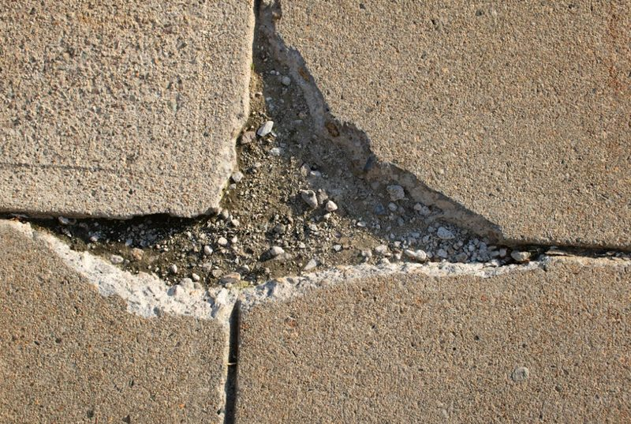
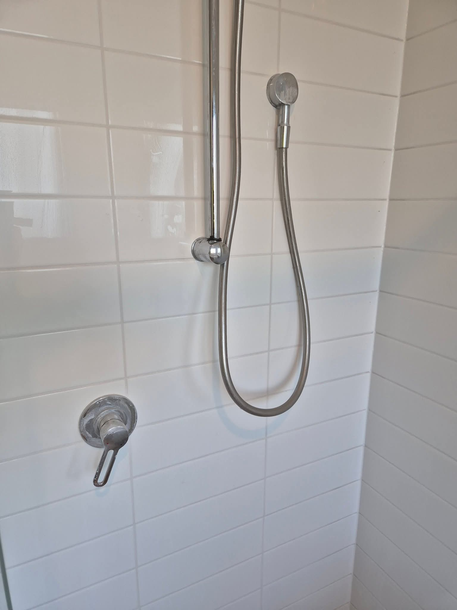

Tile and Grout Repairs Bacchus Marsh
Cracked tiles, loose tiles and grout that has crumbled out of the joints, repaired across Bacchus Marsh, Darley and Maddingley without pulling up the whole floor.
Small Damage, Fixed Small
A cracked tile in the kitchen, a loose one beside the shower or a run of grout worn down below the tile edge does not mean a renovation. We cut out the damaged tiles, set replacements and rebuild the grout around them with Mapei, so the repair holds and the rest of the room stays exactly as it is.
Bacchus Marsh is part of our regular service area, along with Darley, Maddingley and Ballan. There is no call-out fee, and the quote is a fixed price in writing before anything is touched. If a shower in the same house needs regrouting too, tell us when you enquire and we will price both together.
Grout Fails Before Tiles Do
Most tile damage starts in the joints. Grout wears, cracks or shrinks back from the edge, water gets in underneath, and the adhesive holding the tile slowly lets go. By the time a tile rocks underfoot, the grout around it has usually been letting water through for a long while.
That is why a proper repair renews the grout around the damaged area and not just the tile in the middle of it. Patching one tile and leaving tired grout beside it is how the same spot ends up needing a second repair.
Repairs in Bacchus Marsh Homes
Bacchus Marsh has two kinds of housing side by side: older homes close to the town centre, and newer estates in Darley and around the edges of town. Older kitchens and bathrooms often have tiles laid straight onto render, while newer ones can have builder-grade grout that was never sealed. Both end up with cracked tiles and leaking joints, for different reasons.
The valley swings from frosty winter mornings to hot summer afternoons, and tiled floors move with it. That movement opens hairline cracks in the grout first. Before a new tile goes down we check what the old one was sitting on, and if the surface underneath changes the job, we tell you and confirm the price in writing before carrying on.
How a Tile Repair Works
Every repair runs in the same order:
- ✓ Look over the damaged tiles and tap-test the ones around them
- ✓ Cut out cracked, chipped or loose tiles without disturbing their neighbours
- ✓ Clean back and level the surface underneath
- ✓ Bed a matched or closest-available replacement tile
- ✓ Rebuild the surrounding grout with Mapei and seal the area
When to Call for a Repair
Get it looked at if you see:
- ✓ Grout that has cracked, crumbled or dropped below the tile edge
- ✓ A tile that moves, rocks or sounds hollow when tapped
- ✓ A crack running across the face of a tile
- ✓ Chipped tile edges in a hallway or kitchen
- ✓ Lifting tiles on a patio, step or alfresco area
What Every Repair Includes
On every Bacchus Marsh tile repair:
- ✓ Mapei grout, silicone and waterproofing products
- ✓ A fixed quote in writing before work starts
- ✓ No call-out fee
- ✓ Homes and commercial premises
- ✓ Workmanship guaranteed. If something is not right, we come back and sort it
More Regrouting & Tiling Services in Bacchus Marsh

Shower Regrouting
Cracked grout and failing seals don't stand a chance.
Pool Regrouting
Pools take a beating from chemicals and constant water exposure.

Tile and Pavement Regrouting
Driveways, patios, and indoor floors all need solid grout work.

Pool Coping Tile Restoration
Restoration using premium Mapei products.

Waterproofing and Resilicone
We seal it out before it becomes a problem.
Recent Finished Jobs
A snapshot of recent regrouting and tiling work.



Cracked Tile or Crumbling Grout
Call us or send an enquiry for a free quote anywhere in Bacchus Marsh, Darley or Maddingley.
Tile and Grout Repair Questions
Can you repair the grout without replacing any tiles?
Yes, if the tiles themselves are sound. Where the grout has cracked or worn but the tiles are still firmly bonded, we rake out the failed grout and rebuild the joints with Mapei. If any tiles turn out to be loose once the old grout is out, we tell you before going any further.
Can one cracked tile be replaced on its own?
Usually. A damaged tile can be cut out without lifting the tiles around it, and the new one is bedded, grouted and sealed in place. The only real limit is finding a tile that matches.
What if I cannot find a matching tile?
Older tiles often go out of production. We look for a match first, and if there is none we go through the nearest options with you before anything is laid. Spare tiles from the original job are the best match there is, so check the garage or the shed before we start.
How long does a tile repair take?
A small repair of a few tiles is usually done in one visit. Larger areas, or repairs where the surface underneath needs work, are quoted on inspection with a timeline attached.
Do you come out to Darley, Maddingley and Ballan?
Yes. Bacchus Marsh and the towns around it, including Darley, Maddingley and Ballan, are inside our service area. There is no call-out fee, and you get a fixed price in writing before any work starts.
Should I repair or re-tile?
Repair when the damage is limited to a few tiles or a patch of grout. If most of a floor is cracked or drummy, fixing it tile by tile costs more than it saves, and we will say so when we see it rather than sell you a repair that will not last.
More questions? Contact us and we will answer anything else you need to know.
Contact